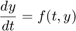
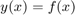
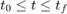
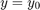
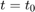
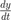
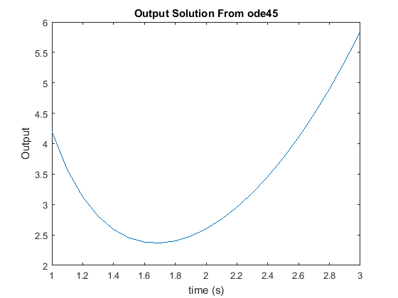
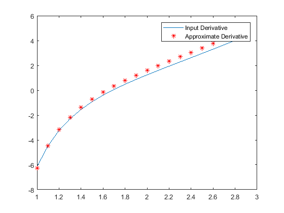
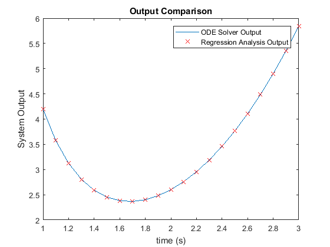

Chapter 9 Notes Part 2:
Differential equations play a crucial role in virtually every physical phenomenon involved in science and engineering. Unfortunately, only a ilmited number of them can be solved analytically. So we use numerical methods to approximate the solutions in those cases. This is not a trivial task however and thus there are multiple numerical methods developed for different types of equations.
This section describes in deail how MATLAB can be sued to solve a first order differential equation. This solutio provides the basis for solving higher-order equations and systems of equations.
Contents
Standard First Order Differential Form
The first order Ordinary Differential Equation (ODE) is an equation of an independent variable t, a dependent variable y, and derivatives of the independent variable. It can be represented in the following form:

The solution is the function

Where, y(t) satisfies the differential equation above.
In general, many functions can satisfy a given ODE. However, additional information, in the form of initial conditions, are required to determine the solution to a specific problem. Also, the independent variable will not always be a function of time (t). However, since a large number of applications are time dependent adn to be consistent with MATLAB documentation
ODE Solution Step 1: Write the Problem in Standard Form
 with
 at 
ODE Solution Step 2: Create User-Defined or Anonymous Function
function dydt = ODEexp1(t,y) dydt = (t.^3-2.*y)./t;
or
Let's use an anonymous function to create a usable function handle of the mathematical
ode1 = @(t,y) (t.^3-2*y)./t
ode1 =
function_handle with value:
@(t,y)(t.^3-2*y)./t
ODE Solution Step 3: Select a Method of Solution
.
Many numerical methods have been developed to solve first-order ODEs, and several of the methods are available as built-in functions in MATLAB. In a typical numerical method, the time interval is divided into small time steps. The solution starts at the known pointy0, and then by using one of the integration methods the value of y is calculated at each time step.
![$$ \begin{tabular}{ll} \textbf{ODE Solver Name} & \textbf{Description} \\
ode45 & For nonstiff problemsone-step solver, best to apply
as a first try for most problems. Based on explicit
Runge-Kutta method. \\
ode23 & For nonstiff problems, one-step solver. Based on
explicit Runge-Kutta method. Often quicker but less
accurate than ode45. \\
ode113 & For nonstiff problems, multistep solver.\\
ode15s & For stiff problems, multistep solver. Use if ode45
failed. Uses a variable order method.\\
ode23t & For stiff problems, one-step solver. Can solve some
problems that ode15s cannot.\\
ode23t & For moderately stiff problems.\\
ode23tb & For stiff problems. Often more efficient than ode15s\\
\end{tabular} $$](Chapter9_Lecture_Notes_Pt2_eq13315413744647246706.png)
For our demonstration, we will use ode45
ODE Solution Step 4: Solve the ODE
The form of the command that is used to solve an initial value ODE problem is the same for all the solvers and for all the equations that are solved. The form is
[t,y] = solver_name(ODEfun,tspan,y0)
solver_name : Is the name of the solver (numerical method) e.g. ode45 or ode23s
ODEfun : The function from Step 2 that calculates  for given values of t and y. If it was written as a user-defined function, the function handle is entered. If it was written as an anonymous funcion, the name of the anonymous function is entered.
tspan : A vector that specifies the interval of the solution. The vector must have at least two elements but can have more. If the vector has only two elements, the elements must be [t0,tf], wihi are the initial and final points of the solution interval. The vector tspan can have additional points between the first and last points. The number of elements in tspan affects the output from the command.
y0 :The initial value of y ( the value of y at the first point of the interval
[t,y] : The output which is the solution of the ODE. _t and y are column vectors. The first and last points are teh beginning and end points of the interval. The spacing and number of points in between depends on the input vector tspan. If tspan has two elements (the beginning and end points), the vectors t and y contain the solution at every integration step calculated by the solver. If tspan has more than two points (additional points between the first and the last), the vectors t and y contain the solution only at these points. The number of points in tspan does not affect the time steps used for the solution by the program
%Call the solver function dt = 0.1; [t,y] = ode45(ode1,[1:dt:3],4.2); plot(t,y) xlabel('time (s)'); ylabel('Output'); title('Output Solution From ode45');
Use the given data to do a quick comparision. We'll learn about the 'diff' function later. Until then, do a help on it now to learn of its functionality.
help diff % We will use it to approximate the first derivative of a data % vector...Note for diff, we actually lose one data point. der_1st = diff(y)/dt; % Now let's plot it figure(1) %If the function returned by the solver is correct, we should be able sub %the original function back in to check it. N = length(t); t1 = t(1:N-1); out1 = ode1(t1,y(2:N)); plot(t1, out1, t1,der_1st, 'r*' ) legend('Input Derivative', 'Approximate Derivative');
DIFF Difference and approximate derivative.
DIFF(X), for a vector X, is [X(2)-X(1) X(3)-X(2) ... X(n)-X(n-1)].
DIFF(X), for a matrix X, is the matrix of row differences,
[X(2:n,:) - X(1:n-1,:)].
DIFF(X), for an N-D array X, is the difference along the first
non-singleton dimension of X.
DIFF(X,N) is the N-th order difference along the first non-singleton
dimension (denote it by DIM). If N >= size(X,DIM), DIFF takes
successive differences along the next non-singleton dimension.
DIFF(X,N,DIM) is the Nth difference function along dimension DIM.
If N >= size(X,DIM), DIFF returns an empty array.
Examples:
h = .001; x = 0:h:pi;
diff(sin(x.^2))/h is an approximation to 2*cos(x.^2).*x
diff((1:10).^2) is 3:2:19
If X = [3 7 5
0 9 2]
then diff(X,1,1) is [-3 2 -3], diff(X,1,2) is [4 -2
9 -7],
diff(X,2,2) is the 2nd order difference along the dimension 2, and
diff(X,3,2) is the empty matrix.
See also GRADIENT, SUM, PROD.
Reference page in Doc Center
doc diff
Other functions named diff
datetime/diff duration/diff sym/diff tall/diff
 Let's take it one step further and see if we can come up with a polynomial fit using our regression analysis function.
approxFit = polyfit(t,y,6) %Now lets plot the out1 = polyval(approxFit,t); plot(t,y, t,out1,'rx') legend('ODE Solver Output', 'Regression Analysis Output'); xlabel('time (s)'); ylabel('System Output'); title('Output Comparison');
approxFit =
0.2237 -3.0435 17.2476 -52.2316 91.2139 -88.0757 38.8637
 Example Problems
29, 35, 36, 38